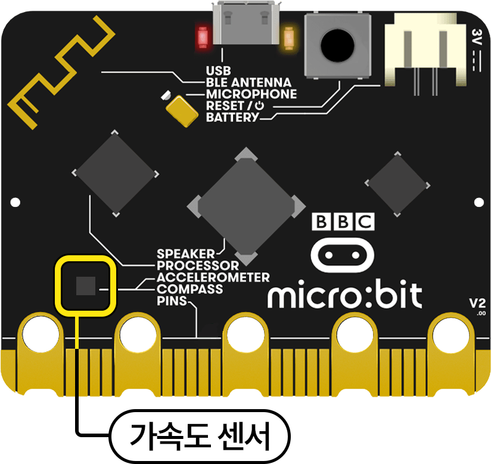
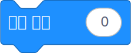
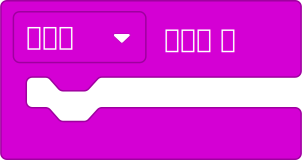
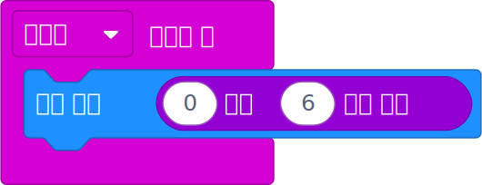

마이크로비트의 가속도 센서를 활용하여 디지털 주사위를 만드는 프로그램을 작성해 보자.
문제 상황
친구와 보드 게임을 하려던 중 주사위가 없어진 것을 발견했다.
그런데 주변에는 주사위를 만들 만한 종이나 블록을 구할 수 없는 상황이다.
그렇다면 종이나 블록 없이 주사위를 만들 수 있는 방법은 없을까?
프로그램 결과 미리 보기
1시스템 구성
프로그램의 실행 화면을 구성해 보자.
프로그램의 실행 화면 구성 요소
| 구분 |
이미지 |
설명 |
| 입력 |
 |
가속도 센서
가속도를 측정하여 움직임을 감지하는 센서
|
| 출력 |
 |
LED 디스플레이
가속도 센서가 흔들림을 감지하면 LED 디스플레이에 숫자를 출력
|
2프로그래밍
①사용할 명령어 블록 알아보기
사용할 명령어 블록 알아보기
| 명령어 카테고리 |
블록 이미지 |
설명 |
|
 |
LED 디스플레이에 선택한 숫자를 표시한다. |
|
 |
흔들리는 동작을 감지했을 때 감싸고 있는 블록들을 실행한다. |
|
|
0부터 10 사이의 숫자 중 하나를 무작위로 선택한다. |
②프로그램 작성하기

3결과 확인
시뮬레이터의 SHAKE를 눌러 프로그램을 실행한 후 실행 결과를 확인해 보자.
4평가
프로그램을 실행한 후 다음 항목을 확인해 보자.